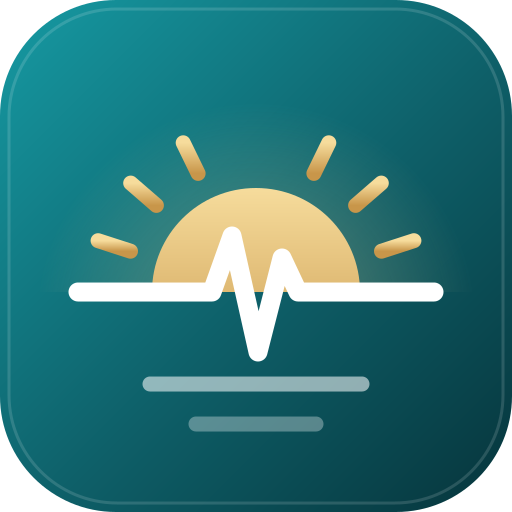

Adult Emergency Unit – Emergency Department
Morning Report Attendance
Guide for Recipients & Managers
How to view attendance, receive reports, correct entries and reprint the QR poster
1What you receive automatically
- Daily report (PDF) by email at about 07:15 on every session day (Sunday–Thursday): names, IDs, training levels, registration times and total attendance.
- Monthly summary (PDF) on the 1st of each month, and a yearly summary on 1 January: sessions held, attendance per session and each trainee's attendance rate.
- All PDFs are also kept in the shared Google Drive folder “Morning Report Attendance – PDF Archive” (Drive → Shared with me).
- A read-only Google Sheet “… Attendance Register (read-only)” with every registration, refreshed every 10 minutes (Drive → Shared with me). Its first tab, Start Here, has all the links in this guide.
2Open the dashboard
Dashboard: morningreport.patientflowms.com/admin.html
- Open the link on your phone or computer and tap Continue with Google.
- Choose the Google account that is registered as a recipient (the one that receives the reports).
- You will see today's attendance live, the 30-session trend, attendance by training level, rejected attempts and the change history. Use the date arrows to look at any previous day.
- Trainee attendance tab: each trainee's attendance rate for the last 30 days to 12 months. Export CSV downloads the data.
3Who can do what
| Task | View access | Manage access |
|---|
| See attendance, trends, history; export CSV | ✓ | ✓ |
| Receive all PDF reports; open the read-only register and PDF archive | ✓ | ✓ |
| Download and reprint the QR poster | ✓ | ✓ |
| Add a missed attendance, correct or remove an entry | – | ✓ |
| Email the report to all recipients | – | ✓ |
| Settings, recipients, session times, classroom location | System owner only (Dr. Swaid Saulat) |
Morning Report Attendance
For managers · Reprinting the QR · Help
4Correcting attendance (Manage access)
- Someone attended but could not register (phone problem, no GPS): Dashboard → + Manual entry → date, time, name, ID, level, note → Add entry. It is marked Manual in the register and report.
- Wrong name, ID, level or time: in the register, tap ✎ on that row, fix it, write a short reason, Save correction.
- Entry that should not be there (registered by mistake): tap 🗑, write the reason, Remove entry.
- Resend a report after a correction: Email report ▾ → Send to all recipients (or Send a copy to me).
Every correction or removal is recorded with who made it, when, before → after and the reason. You can see it in the dashboard under Change history. Removed entries are kept in the audit record and can be restored by the system owner.
5QR code poster: download & reprint
If the poster in the classroom is lost, damaged or removed, anyone on the recipient list can print a new one. The QR code never changes, so an old copy keeps working.
Direct PDF (A4)
morningreport.patientflowms.com/QR-Poster.pdf
Other places
Read-only register → Start Here tab · Drive PDF Archive → Printables · Dashboard → System & links
Print on A4, scale 100% (or A3 “fit to page” for a larger poster). Place it at eye level near the classroom entrance.
6How attendees register (for reference)
- Scan the QR with the phone camera between 06:00 and 06:45 (Riyadh time).
- Sign in with any Google account, enter full name, Staff ID and training level.
- Allow location: the phone must be in the classroom area. One registration per person per session; late or remote attempts are refused and listed under Rejected attempts.
7Help
- “No dashboard access”: you are signed in with a different Google account. Tap Sign out and choose the account that receives the reports.
- A trainee says “ID linked to another account”: they used a different Google account before. Add their attendance manually and tell the system owner.
- Changes to times, recipients, settings or classroom location: contact the system owner, Dr. Swaid Saulat (swsaulat@gmail.com).
وحدة طوارئ البالغين – قسم الطوارئ
حضور التقرير الصباحي
دليل المستلمين والمديرين
كيفية عرض الحضور، واستلام التقارير، وتصحيح الإدخالات، وإعادة طباعة ملصق رمز QR
1ما يصلك تلقائيًا
- تقرير يومي (PDF) بالبريد الإلكتروني نحو الساعة 07:15 في كل يوم جلسة (من الأحد إلى الخميس): الأسماء والأرقام الوظيفية والمستويات التدريبية وأوقات التسجيل وإجمالي الحضور.
- ملخص شهري (PDF) في اليوم الأول من كل شهر، وملخص سنوي في 1 يناير: الجلسات المنعقدة، والحضور في كل جلسة، ونسبة حضور كل متدرب.
- تُحفظ جميع ملفات PDF أيضًا في مجلد Google Drive المشترك «Morning Report Attendance – PDF Archive» (Drive ← مشترك معي).
- ملف Google Sheet للقراءة فقط «… Attendance Register (read-only)» يضم كل التسجيلات ويُحدَّث كل 10 دقائق (Drive ← مشترك معي). يحتوي تبويبه الأول Start Here على جميع الروابط الواردة في هذا الدليل.
2فتح لوحة الإدارة
لوحة الإدارة: morningreport.patientflowms.com/admin.html
- افتح الرابط على جوالك أو حاسوبك واضغط المتابعة باستخدام Google.
- اختر حساب Google المسجَّل كمستلم (الحساب الذي تصله التقارير).
- سترى حضور اليوم مباشرةً، واتجاه آخر 30 جلسة، والحضور حسب المستوى التدريبي، والمحاولات المرفوضة، وسجل التغييرات. استخدم أسهم التاريخ لعرض أي يوم سابق.
- تبويب حضور المتدربين: نسبة حضور كل متدرب خلال فترة من آخر 30 يومًا حتى 12 شهرًا. يتيح تصدير CSV تنزيل البيانات.
3الصلاحيات
| المهمة | صلاحية العرض | صلاحية الإدارة |
|---|
| عرض الحضور والاتجاهات والسجل؛ تصدير CSV | ✓ | ✓ |
| استلام جميع تقارير PDF؛ فتح السجل للقراءة فقط وأرشيف PDF | ✓ | ✓ |
| تنزيل ملصق رمز QR وإعادة طباعته | ✓ | ✓ |
| إضافة حضور فائت، أو تصحيح إدخال أو حذفه | – | ✓ |
| إرسال التقرير بالبريد إلى جميع المستلمين | – | ✓ |
| الإعدادات والمستلمون وأوقات الجلسات وموقع القاعة | مالك النظام فقط |
حضور التقرير الصباحي
للمديرين · إعادة طباعة رمز QR · المساعدة
4تصحيح الحضور (صلاحية الإدارة)
- شخص حضر ولم يتمكن من التسجيل (مشكلة في الجوال أو تعذّر GPS): لوحة الإدارة ← + إدخال يدوي ← التاريخ والوقت والاسم والرقم والمستوى والملاحظة ← إضافة الإدخال. يظهر بعلامة يدوي في السجل والتقرير.
- خطأ في الاسم أو الرقم أو المستوى أو الوقت: في السجل، اضغط ✎ في ذلك الصف، وصحّح البيانات، واكتب سببًا مختصرًا، ثم اضغط حفظ التصحيح.
- إدخال لا ينبغي وجوده (سُجّل بالخطأ): اضغط 🗑، واكتب السبب، ثم حذف الإدخال.
- إعادة إرسال التقرير بعد التصحيح: إرسال التقرير بالبريد ▾ ← أرسل إلى جميع المستلمين (أو أرسل نسخة إليّ).
يُسجَّل كل تصحيح أو حذف مع من أجراه ومتى والقيمة قبل ← بعد والسبب. يمكنك الاطلاع عليه في لوحة الإدارة ضمن سجل التغييرات. تبقى الإدخالات المحذوفة محفوظة في سجل التدقيق، ويمكن لمالك النظام استعادتها.
5ملصق رمز QR: التنزيل وإعادة الطباعة
إذا فُقد الملصق في القاعة أو تلف أو أُزيل، يمكن لأي شخص في قائمة المستلمين طباعة ملصق جديد. رمز QR لا يتغيّر أبدًا، لذا تبقى النسخة القديمة صالحة.
ملف PDF مباشر (A4)
morningreport.patientflowms.com/QR-Poster.pdf
أماكن أخرى
السجل للقراءة فقط ← تبويب Start Here · أرشيف PDF في Drive ← Printables · لوحة الإدارة ← النظام والروابط
اطبع على ورق A4 بمقياس 100% (أو A3 مع «ملاءمة للصفحة» لملصق أكبر). ضعه في مستوى النظر قرب مدخل القاعة.
6كيف يسجّل الحاضرون (للاطلاع)
- امسح رمز QR بكاميرا الجوال بين الساعة 06:00 و06:45 (بتوقيت الرياض).
- سجّل الدخول بأي حساب Google، وأدخل الاسم الكامل والرقم الوظيفي والمستوى التدريبي.
- اسمح بالوصول إلى الموقع: يجب أن يكون الجوال داخل نطاق القاعة. تسجيل واحد لكل شخص في كل جلسة؛ تُرفض المحاولات المتأخرة أو عن بُعد وتظهر ضمن المحاولات المرفوضة.
7المساعدة
- «لا توجد صلاحية للوحة الإدارة»: أنت مسجّل الدخول بحساب Google مختلف. اضغط تسجيل الخروج واختر الحساب الذي تصله التقارير.
- متدرب تظهر له رسالة «الرقم مرتبط بحساب آخر»: سبق أن استخدم حساب Google مختلفًا. أضف حضوره يدويًا وأبلغ مالك النظام.
- تغيير الأوقات أو المستلمين أو الإعدادات أو موقع القاعة: تواصل مع مالك النظام (swsaulat@gmail.com).